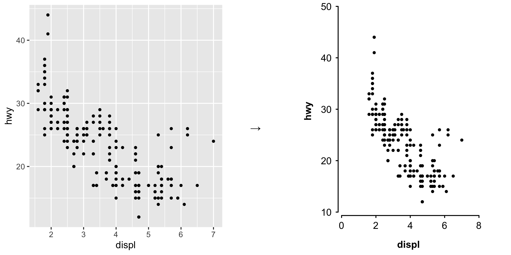

ckbplotr provides functions to help create and style plots in R. It is being developed by, and primarily for, China Kadoorie Biobank researchers.
Installation
Directly from github
The latest development version of ckbplotr can be installed directly from github using devtools.
install.packages('devtools') devtools::install_github('neilstats/ckbplotr')
Or from source package
ckbplotr can also be installed from its source package. The R packages ggplot2, magrittr, readr, tibble, dplyr, purrr and rlang must first be installed. These are part of the collection of tidyverse packages.
# The easiest way is to install the whole tidyverse: install.packages("tidyverse") # # Or install just these packages: # install.packages(c("ggplot2", "readr", "dplyr", "purrr"))
Then ckbplotr can be installed from its source package using the code:
install.packages("ckbplotr.tar.gz", repos = NULL, type = "source")
Or, in RStudio, open the “Tools” menu and select “Install Packages…”. In the “Install from…” box select “Package Archive File”, and in the “Package archive” box browse to the ckbplotr.tar.gz file.
The source package for the latest release version is available here.
The make_shape_plot function
The make_shape_plot function creates a plot of estimates and CIs against risk factor levels using the ggplot2 package.
The function returns a named list containing:
- plot: the plot
- code: ggplot2 code to generate the plot
The function uses the plot_like_ckb function to modify the theme and control the look of the plot.
In RStudio, the ggplot2 code used to generate the plot will be shown in the ‘Viewer’ pane. This code can be copied and further edited to adapt the plot.
Examples
Given a data frame of estimates and standard errors (to be plotted on the y axis), and risk factor levels (to be plotted on the x axis), a plot can be created.
library(ggplot2) library(ckbplotr) results <- data.frame( est = c(1, 1.25, 1.5, 1.75, 1.1, 1.35, 1.75, 2), se = c(0.08, 0.02, 0.07, 0.15, 0.05, 0.02, 0.07, 0.1), rf = c(20, 28, 35, 50, 18.5, 25, 32, 47), n = c(109, 103, 143, 104, 140, 134, 127, 99), is_female = c(0, 0, 0, 0, 1, 1, 1, 1) ) plot <- make_shape_plot(results[results$is_female == 1,], col.x = "rf", col.estimate = "est", col.stderr = "se", col.n = "n", xlims = c(15,50), ylims = c(0.5, 3), scalepoints = TRUE, title = NULL)

The col.group argument can be supplied to plot results for different groups (in shades of grey).
plot <- make_shape_plot(results, col.x = "rf", col.estimate = "est", col.stderr = "se", col.n = "n", col.group = "is_female", xlims = c(15,50), ylims = c(0.5, 3), scalepoints = TRUE, title = NULL)

The plot_like_ckb function
The plot_like_ckb function does three things to a ggplot2 plot:
- modifies the theme (i.e. the overall appearance)
- extends the plotting area, hides the default axis lines and manually adds axis lines (so that you can have a custom sized gap between the plotting area and the axes)
- applies a fixed aspect ratio
Examples
Make a scatter plot with ggplot.
library(ggplot2) library(ckbplotr) plot <- ggplot(data = mpg, aes(x = displ, y = hwy)) + geom_point(size = 1) plot

Then apply the plot_like_ckb function to the plot.
plot_like_ckb(plot = plot, xlims = c(0, 8), ylims = c(10, 50))

If you do not want a gap between the axes, set gap = c(0, 0).
plot_like_ckb(plot = plot, xlims = c(0, 8), ylims = c(10, 50), gap = c(0, 0))

If you wish to override some aspect of the theme applied by plot_like_ckb, then this can be done by adding a theme after the function.
plot_like_ckb(plot = plot, xlims = c(0, 8), ylims = c(10, 50)) + theme(axis.title = element_text(colour = "red", face = "plain"))

If any data points you are plotting fall outside the axes, then they will still be drawn and may show up in places such as the axes, the legend, the plot title, or the plot margins. There is also no warning if data points fall outside the whole plot area.
So it is best to check that your xlim and ylim values are suitable for your data before using the function.
# The xlim and ylim ranges are too narrow plot_like_ckb(plot = plot, xlims = c(0, 4), ylims = c(20, 50))

A bar chart.
barplot <- ggplot(mpg, aes(class)) + geom_bar() plot_like_ckb(barplot, xlims = c(0.5, 7.5), ylims = c(0, 70), gap = c(0.025, 0.005), ratio = 0.5) + theme(axis.ticks.x = element_blank())

The make_forest_plot function
The make_forest_plot function creates a forest plot using the ggplot2 graphics package. It is available as part of the ckbplotr package.
The function returns a named list containg:
- plot: the plot
- data: a data frame from which the plot is generated
- code: ggplot2 code to generate the plot
In RStudio the ggplot2 code used to generate the plot will be shown in the ‘Viewer’ pane. If modifications are needed to the plot, then this code can be copied, edited, and run as needed.
Expected warning
You may get the following warning when using this function.
Vectorized input to
element_text()is not officially supported. Results may be unexpected or may change in future versions of ggplot2.
This is related to how some headings used to label the rows of the forest plot are made bold. This should not be a problem if the forest plot produced appears as expected. (This hack is discussed here.)
The headings data frame
The data frame specified in the headings argument allows the use of headings to label the rows of the forest plot.
This must data frame contain columns ‘heading1’, ‘heading2’ and ‘heading3’, which can be set to NA if not needed for a particular row. For example, if you do not need a third level of heading for a particular row, then set heading3=NA for that row. If you only need one level of headings, then set heading2=NA and heading3=NA for every row.
The data set must also contain a column with the same name as a column in each of the results data sets. This column is used to match headings to the correct results, and is specified in the argument col.key.
The argument rows specifies which results should be included in the plot, by giving some headings from the heading1 column of the headings data frame.
(The order given in the rows argument decides the order in which the heading1 labels will be in the plot (top to bottom). The heading2 and heading3 labels will be in the order that they are in the headings data frame.)
Examples
First of all, do your analyses and put the results into data frames (one data frame for each forest plot column). Here we generate some example results.
set.seed(57911624) exampleresults <- function(){ data.frame(variable = c('nmr_l_vldl_p', 'nmr_m_vldl_p', 'nmr_s_vldl_p', 'nmr_idl_p', 'nmr_l_ldl_p', 'nmr_m_ldl_p', 'nmr_s_ldl_p', 'nmr_l_vldl_tg', 'nmr_m_vldl_tg', 'nmr_s_vldl_tg', 'nmr_idl_tg', 'nmr_l_ldl_tg', 'nmr_m_ldl_tg', 'nmr_s_ldl_tg', 'nmr_l_vldl_c', 'nmr_m_vldl_c', 'nmr_s_vldl_c', 'nmr_idl_c', 'nmr_l_ldl_c', 'nmr_m_ldl_c', 'nmr_s_ldl_c'), estimate = rnorm(21, 0, 0.02), stderr = 0.012 + abs(rnorm(21, 0, 0.015)), n = round(runif(21, 100, 2000)), nb = round(runif(21, 100, 2000))) } resultsA <- exampleresults() resultsB <- exampleresults() resultsC <- exampleresults() resultsD <- exampleresults() resultsE <- exampleresults()
library(ckbplotr) forestplot <- make_forest_plot(cols = list(resultsA, resultsB), exponentiate = TRUE, colnames = c("Analysis A", "Analysis B"), col.key = "variable") #> Warning: Vectorized input to `element_text()` is not officially supported. #> Results may be unexpected or may change in future versions of ggplot2.

To use headings, create a data frame of headings and specify arguments headings and rows.
#> heading1 heading2 heading3 variable
#> 1 Lipoprotein particle concentration VLDL Large nmr_l_vldl_p
#> 2 Lipoprotein particle concentration VLDL Medium nmr_m_vldl_p
#> 3 Lipoprotein particle concentration VLDL Small nmr_s_vldl_p
#> 4 Lipoprotein particle concentration IDL <NA> nmr_idl_p
#> 5 Lipoprotein particle concentration LDL Large nmr_l_ldl_p
#> 6 Lipoprotein particle concentration LDL Medium nmr_m_ldl_p
#> 7 Lipoprotein particle concentration LDL Small nmr_s_ldl_p
#> 8 Triglycerides concentration VLDL Large nmr_l_vldl_tg
#> 9 Triglycerides concentration VLDL Medium nmr_m_vldl_tg
#> 10 Triglycerides concentration VLDL Small nmr_s_vldl_tg
#> 11 Triglycerides concentration IDL <NA> nmr_idl_tg
#> 12 Triglycerides concentration LDL Large nmr_l_ldl_tg
#> 13 Triglycerides concentration LDL Medium nmr_m_ldl_tg
#> 14 Triglycerides concentration LDL Small nmr_s_ldl_tg
#> 15 Cholesterol concentration VLDL Large nmr_l_vldl_c
#> 16 Cholesterol concentration VLDL Medium nmr_m_vldl_c
#> 17 Cholesterol concentration VLDL Small nmr_s_vldl_c
#> 18 Cholesterol concentration IDL <NA> nmr_idl_c
#> 19 Cholesterol concentration LDL Large nmr_l_ldl_c
#> 20 Cholesterol concentration LDL Medium nmr_m_ldl_c
#> 21 Cholesterol concentration LDL Small nmr_s_ldl_cforestplot <- make_forest_plot(headings = headings, rows = c("Lipoprotein particle concentration", "Triglycerides concentration"), cols = list(resultsA, resultsB), exponentiate = TRUE, colnames = c("Analysis A", "Analysis B"), col.key = "variable", ci.delim = " - ", xlim = c(0.9, 1.1), xticks = c(0.9, 1, 1.1), blankrows = c(1, 1, 0, 1), scalepoints = TRUE, pointsize = 3, col.left = c("n"), col.left.space = c(0.02), col.left.heading = c("No. of\nevents"), col.right.space = 0.02, col.heading.space = 1.5, heading.space = 2, plot.space = 8) #> Warning: Vectorized input to `element_text()` is not officially supported. #> Results may be unexpected or may change in future versions of ggplot2.